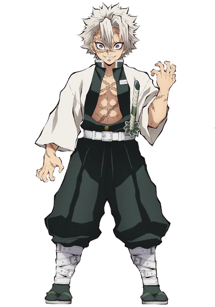
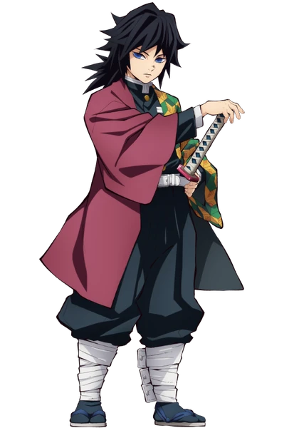
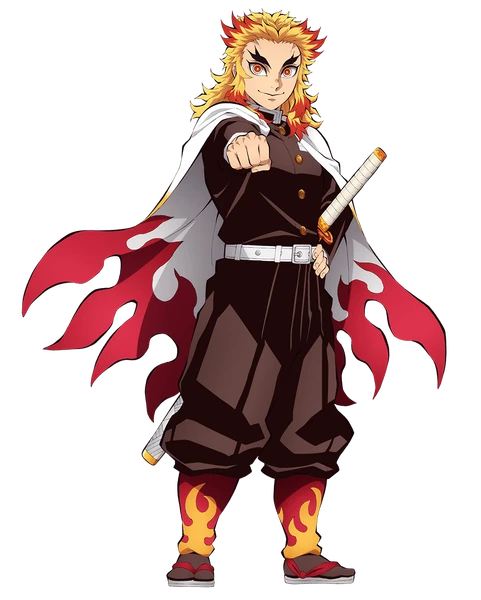
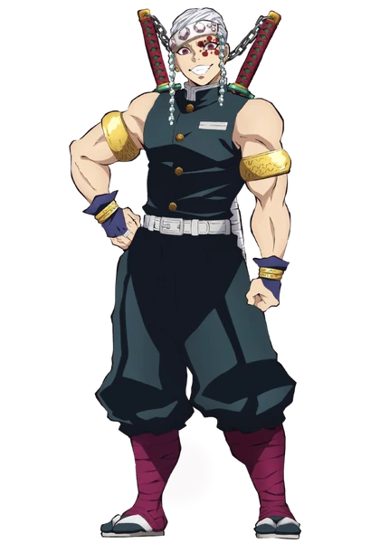
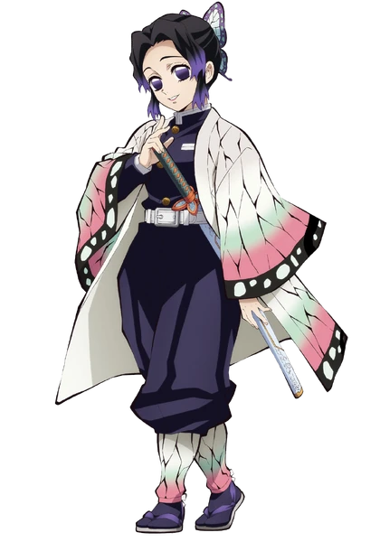
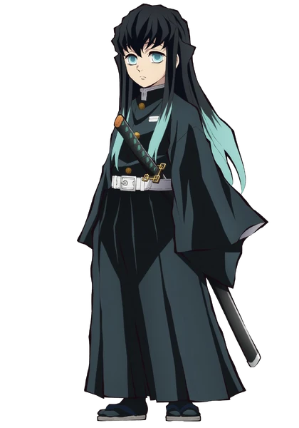
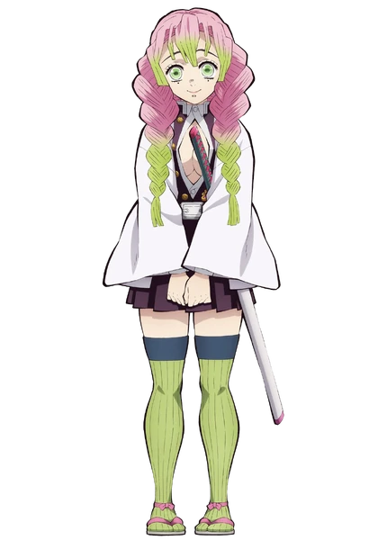
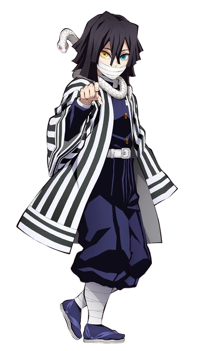
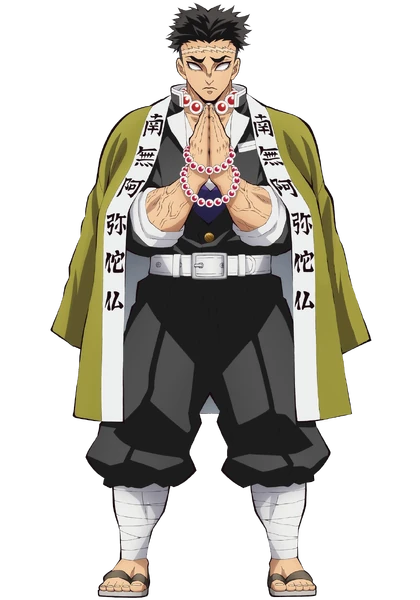

Os 9 Hashiras (Pilares)
Os nove caçadores de demônios mais poderosos da Esquadra de Caçadores. Cada Pilar domina um estilo único de Respiração e possui uma determinação inabalável para erradicar os demônios.
Sanemi Shinazugawa — Hashira do Vento 💨

Estilo de Luta: Respiração do Vento
História & Habilidades: Um guerreiro impulsivo e feroz com sangue especial (Marechi) capaz de desorientar demônios. Carrega as cicatrizes de inúmeras batalhas mortais e possui uma força de vontade inquebrável dedicada a proteger a humanidade.
Giyu Tomioka — Hashira da Água 💧

Estilo de Luta: Respiração da Água (Criador da 11ª Forma: Calmaria)
História & Habilidades: Calmo, reservado e extraordinariamente letal. Foi o primeiro Hashira a poupar Nezuko e a guiar Tanjiro para o treinamento com Sakonji Urokodaki, demonstrando compaixão e sabedoria refinada.
Kyojuro Rengoku — Hashira das Chamas 🔥

Estilo de Luta: Respiração das Chamas
História & Habilidades: Carismático, honrado e dono de um espírito ardente. No confronto do Trem Infinito, defendeu sozinho mais de 200 passageiros e combateu Akaza até o fim, deixando o ensinamento de "Manter o coração em chamas".
Tengen Uzui — Hashira do Som 🔈

Estilo de Luta: Respiração do Som
História & Habilidades: Um ex-shinobi extravagante e estrategista genial. Utiliza katanas duplas gigantes conectadas por uma corrente e possui uma percepção tática baseada na avaliação rítmica dos combates. Para muitos fãs, protagonizou a melhor luta da franquia.
Shinobu Kocho — Hashira dos Insetos 🦋

Estilo de Luta: Respiração dos Insetos
História & Habilidades: Graciosa e mestre em venenos. Compensando a falta de força física para decapitar demônios, desenvolveu uma katana perfurante modificada para injetar veneno mortal derivado de flores de glicínia.
Muichiro Tokito — Hashira do Nevoeiro 🌫️

Estilo de Luta: Respiração do Nevoeiro
História & Habilidades: Um prodígio inacreditável que se tornou Hashira apenas dois meses após pegar em uma katana. Descendente de espadachins lendários, utiliza movimentos velozes e nebulosos para confundir o inimigo.
Mitsuri Kanroji — Hashira do Amor 💕

Estilo de Luta: Respiração do Amor
História & Habilidades: Alegre, gentil e possuidora de uma densidade muscular 8 vezes superior à normal. Luta com uma espada extremamente flexível e ágil como um chicote, combinada com velocidade incrível.
Obanai Iguro — Hashira da Serpente 🐍

Estilo de Luta: Respiração da Serpente
História & Habilidades: Rigoroso, leal e de precisão mortal. Acompanhado por sua serpente Kaburamaru, utiliza uma espada de lâmina ondulada para desferir golpes sinuosos e imprevisíveis.
Gyomei Himejima — Hashira da Rocha 🪨

Estilo de Luta: Respiração da Rocha
História & Habilidades: Reconhecido como o Hashira mais forte e respeitado de toda a Esquadra. Apesar de cego, possui uma percepção espacial sobre-humana, utilizando um pesado machado e mangual acorrentados.
Kagaya Ubuyashiki - Líder dos Hashiras

Estilo de Luta: Ele não luta, ele lidera
História & Habilidades: Kagaya Ubuyashiki é o 97º líder do Esquadrão de Caçadores de Demônios, responsável por comandar os Hashiras, que são os nove caçadores mais fortes da organização. Diferente dos Hashiras, Kagaya não possui habilidades de combate ou técnicas de respiração, mas sua liderança é essencial para a coordenação e motivação dos caçadores. Ele é conhecido por sua sabedoria, compaixão e carisma, conseguindo inspirar e aconselhar seus subordinados de forma eficaz.